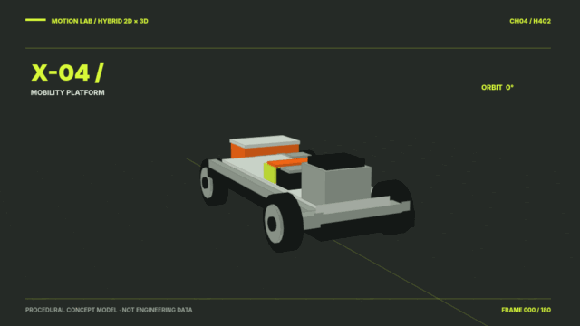

PLAYGROUND
动手试一试。
选一个示例，播放或拖动时间轴。改动时长、缓动或运镜，结果会在舞台中更新。
CHAPTERS
从一个章节开始。
四个章节，每章 12 个动效。点开章节即可筛出对应的案例。
TECHNIQUE INDEX
动效索引。
按章节浏览，也可以用编号、中英文名称或用途查找技法。
COLOR ATLAS
让配色上场。
点一张色卡，整页即时换色。可以直接比较背景、文字和按钮在各套配色中的层级。
RESOURCES

PLAYGROUND
选一个示例，播放或拖动时间轴。改动时长、缓动或运镜，结果会在舞台中更新。
CHAPTERS
四个章节，每章 12 个动效。点开章节即可筛出对应的案例。
TECHNIQUE INDEX
按章节浏览，也可以用编号、中英文名称或用途查找技法。
COLOR ATLAS
点一张色卡，整页即时换色。可以直接比较背景、文字和按钮在各套配色中的层级。
RESOURCES